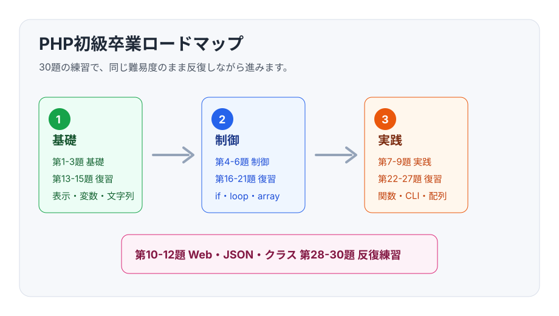

PHPの確認
php -v を実行し、8.2 以上か確かめます。

8.4 で全解答を確認（2026年10月）
php question/question1.php
リポジトリのフォルダで実行します。
問題を書き、解説を読み、解答例と比べます。
php -v を実行し、8.2 以上か確かめます。
TODOを読んでコードを書きます。
考え方と手順を確認します。
解答例と自分の書き方を比べます。
同じ問題をもう一度書き直します。
GitHubで問題・解説・解答を開けます。
PHPはPCで実行します。
解けたら「できたら押す」を押します。記録はこのブラウザに保存されます。
できた題 0/30
echo と改行を使って、画面に文字を表示します。
変数、数値計算、文字列結合を使って結果を表示します。
文字列埋め込み、文字数の取得、表示用の整形を練習します。
点数をもとに、if で合否や評価を判定します。
for と while で、同じ処理を繰り返します。
複数の点数を配列で扱い、合計、平均、最大、最小を出します。
よく使う処理を関数にまとめ、引数と戻り値を使います。
商品データとカートを連想配列で表し、小計と合計を出します。
コマンドライン引数を受け取り、入力チェックしてから処理します。
HTMLフォームから送られた値をPHPで処理し、BMIを計算します。
JSONファイルに日記データを保存し、あとから読み込みます。
クラスを使い、小さな図書管理アプリを作ります。
変数を使って、自己紹介を複数行で表示します。
変数と割り算を使って、1人あたりの金額を計算します。
変数を文章に埋め込んで、案内文を表示します。
年齢ごとに料金を変える条件分岐を練習します。
注文数と在庫数を比べて、注文できるか判定します。
for で1から9まで繰り返して計算します。
while で数を減らしながら表示します。
配列を番号付きで表示し、品数を数えます。
配列、foreach、if を組み合わせます。
計算処理を関数に分けて、呼び出して使います。
関数の中で空文字を判定して、戻り値を作ります。
連想配列の一覧を表示し、条件に合う人数を数えます。
連想配列と条件分岐で、売り切れ表示を作ります。
コマンドライン引数を検証して、税込価格を計算します。
入力の有無と文字数を確認してから表示します。
フォーム入力を受け取り、安全に画面へ表示します。
JSONファイルに簡単な配列を保存して読み込みます。
クラスでTodoを表し、完了状態を切り替えます。
1日30分から60分を目安に、難易度を上げずに反復しながら進めます。
第1題から第5題。PHPの実行、変数、文字列、条件分岐に慣れます。
第6題から第10題。配列、関数、連想配列、CLI、Webフォームを試します。
第11題から第15題。保存、クラス、変数、計算、文字列を復習します。
第16題から第20題。条件分岐、繰り返し、配列を反復練習します。
第21題から第25題。配列、関数、連想配列の組み合わせを練習します。
第26題から第30題。CLI、フォーム、JSON、クラスをもう一度練習します。
すべて説明できたら、PHP初級卒業です。